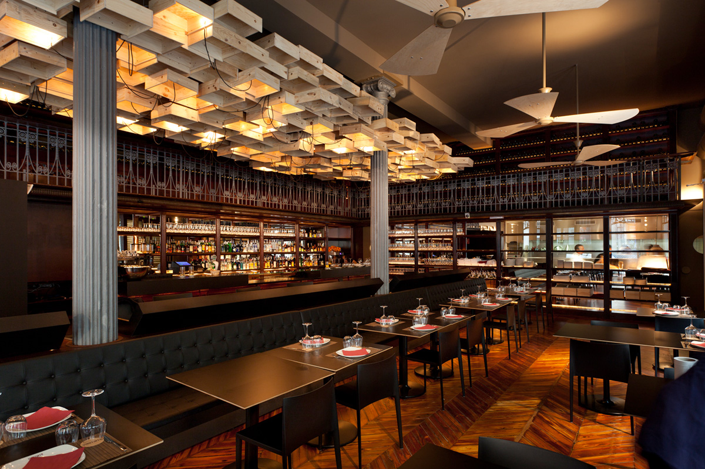
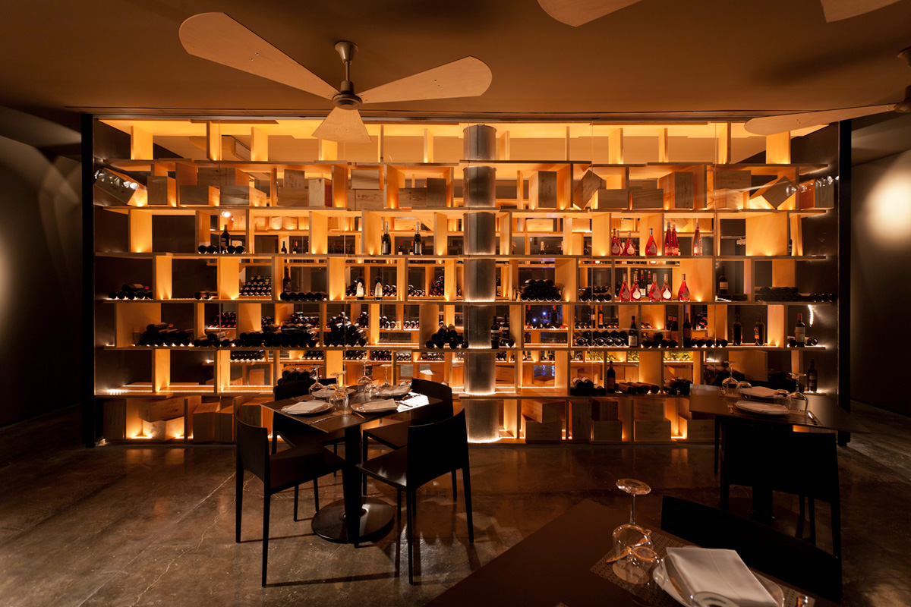

Historia
Deliguate
Nuestro Restaurante fue fundado el 2/4/2001 siendo una tendencia nacional con los mejores platillos Guatemaltecos,Por dichos socios asi, poder servirle a todas las peronas, los turistas entre otros.
Es un restaurante que busca recuperar el gusto por la sazón guatemalteca brindando al comensal, el mejor servicio gourmet de nuestra región.Todo el sabor de Guatemala en el Centro Histórico. Deliciosa comida guatemalteca, preparada en el momento y con una sazón de la casa que te dejará encantado. Se especializan en comida criolla guatemalteca, por lo que se recomienda pedir platillos como el Ka-kik o el Cocido de Res,las famosas enchiladas,el Jocon entre otras.
la sala
Con una capacidad máxima de 100 comensales se trata del salón principal del restaurante, su decoración no te dejará indiferente.
 |
la bodega
Zona perfecta para cenas privadas o presentaciones, tus eventos más personalizados podemos crearlos en esta bodega.
 |
Si necesitas más información puedes ponerte en contacto con nosotros mediante el formulario de contacto de la página o llamando al teléfono
|